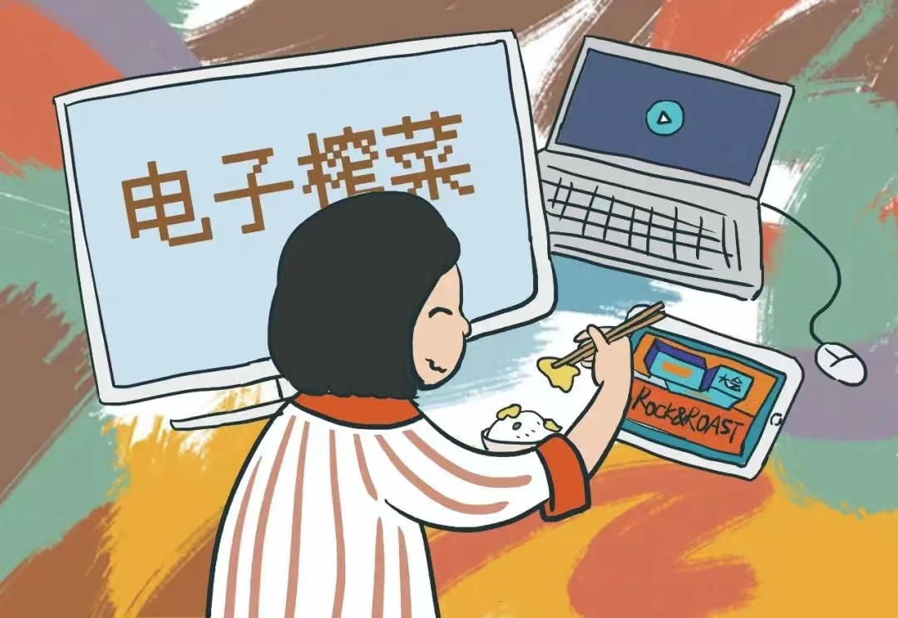
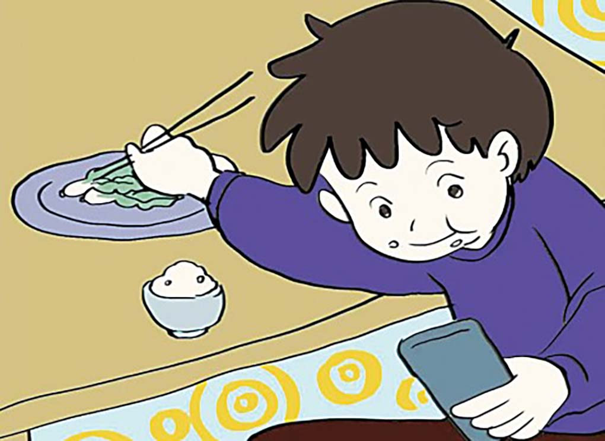
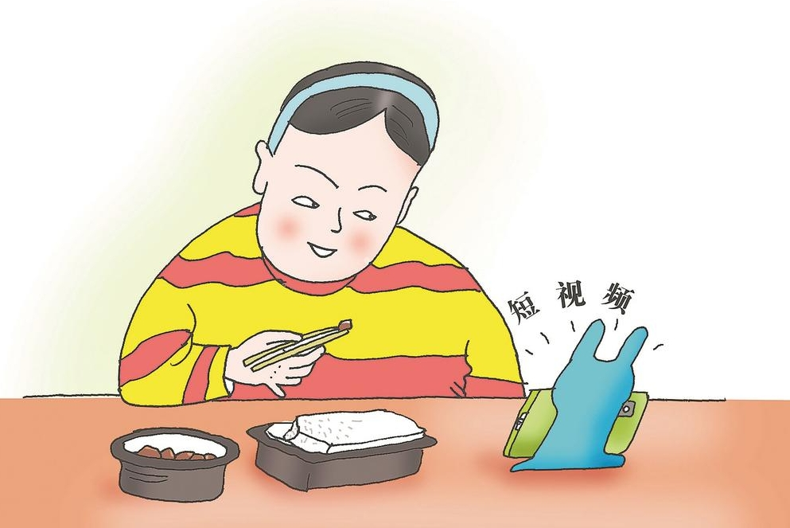

什么是“电子榨菜”？
“电子榨菜”是一个网络流行语，指的是当代年轻人在吃饭时，喜欢用手机或电脑看一些有趣的视频、文章或节目等，给自己带来轻松愉快的感觉。这些视频如同榨菜一般有下饭的作用，因此被称为“电子榨菜”。

"电子榨菜"是什么菜？
“电子榨菜”是指在吃饭时看的视频、文章等，这些内容如同榨菜一样有极强的下饭作用，因此被戏称为“电子榨菜”。“电子榨菜”并不局限于某种类型，可以是各种影视题材，也可以是热播的各种综艺节目、纪录片等。
在风格上，电子榨菜的特点是熟悉、亲切、轻松、毫不费脑，哪怕观众一边分心吃饭也丝毫不影响他们对视频信息的接收。电子榨菜可以是看过一遍又一遍的经典老剧，也可以是氛围轻松的语言类综艺，还可以是一些电子游戏或体育比赛的集锦，也可以是一些二次创作的影视剧解说。


“电子榨菜”为何受人欢迎？
“食用便利”。“撕开即食”“方便入口”是“电子榨菜”的一大特色，单集少则一两分钟，多则三五分钟，内容紧凑适合在不想动脑又不愿无聊的“碎片化”时间里观看。
“口味诱人”。“电子榨菜”之所以成为“佐餐标配”，是因为它浓缩了精华，戳中了观众的“味蕾”，信息直给、观众可以无门槛地接受与理解，在三五分钟内将最猎奇或者最具悬疑的情节讲给观众，吸引其注意力。
“种类丰富”。“电子榨菜”内容海量，无论是宫斗剧，还是综艺、纪录片等，类型众多，总有一款适合你。只要是观众想看的，不论题材、类型、时长，都可以制作出来。

"电子榨菜"会带来哪些影响？
“电子榨菜”带来的影响具有双面性。一方面，它为人们在用餐时提供了娱乐和陪伴，有助于放松心情，缓解压力，使得用餐体验更为愉悦。同时，它也为内容创作者提供了新的商业机会和创作平台。
然而，另一方面，过度依赖“电子榨菜”可能导致人们在用餐时分心，影响对食物的品味和消化，甚至可能引发健康问题。因此，在享受“电子榨菜”带来的乐趣时，我们也需要注意保持适度，避免其带来的潜在负面影响。